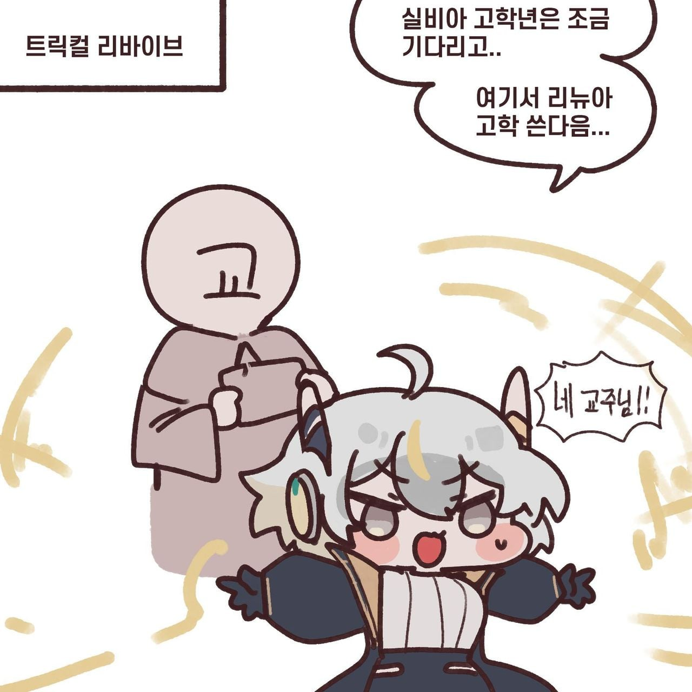
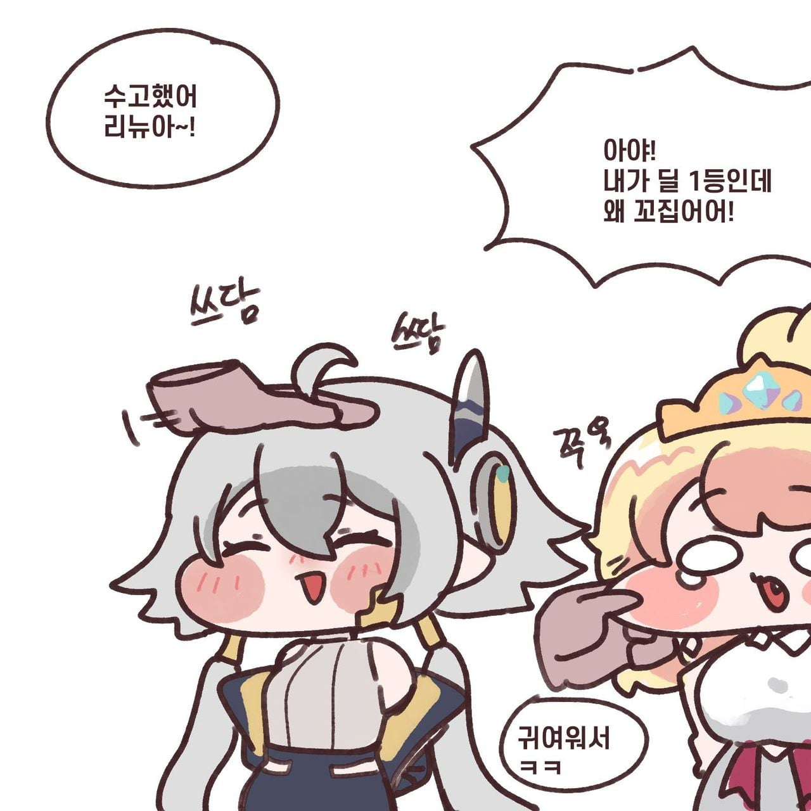
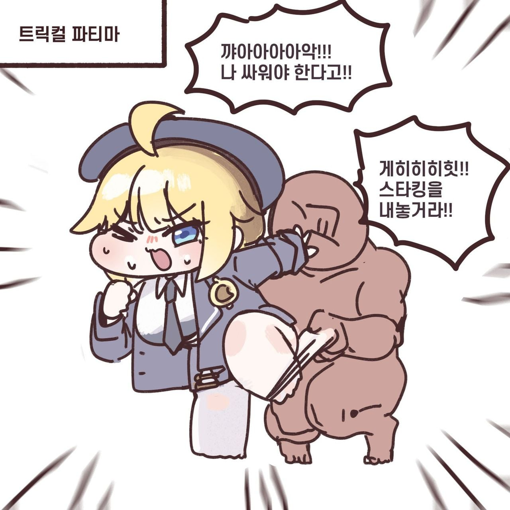
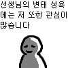

https://ar ca.live/b/trickcal/190160353



https://ar ca.live/b/trickcal/190160353
아트팀에 변태가 많음
신사
라는이름의 변태
진짜 감탄사밖에 안나온다 지퍼는 미친게냐
변태팀을 트리컬로부터 격리하기위해 만든듯
ㅇㅖ?
법무팀과의 막고라에서 마침내 승리한 변태팀
성추행 시뮬레이터를 만들었네 ㅋㅋ
헉
ㅋㅋㅋㅋㅋ
교주 "라이카 빵댕이 때리기? 다야 꼬리 만지기? 힐데 스웨터 당기기? 너 제정신이냐? 문명인이면 그런 건 원래 하면 안되는거라고"
파티마 함장:엥? 전 존나 하는데요
??? : 나는 문명인을 그만두겠다 교주!
근데 다야 꼬리 질감은 좀 궁금하긴 한데


법무(없음)팀이 패배한 세계선..
어우;;; 난 못하겠다;
저런거말고 그냥 트릭컬로 방치형 키우기게임같은거 하나만 만들어주면 좋겠다
ㄹㅇ 이게 나을듯 트릭컬도 딥하게 가면 엄청 피곤함
와... 변태같은 아트팀이 기획이고 개발이고 다 이겼구나.....
아트팀이이긴세계선!!!!

와...
니카 슬쩍 쳐다보는게 기엽네